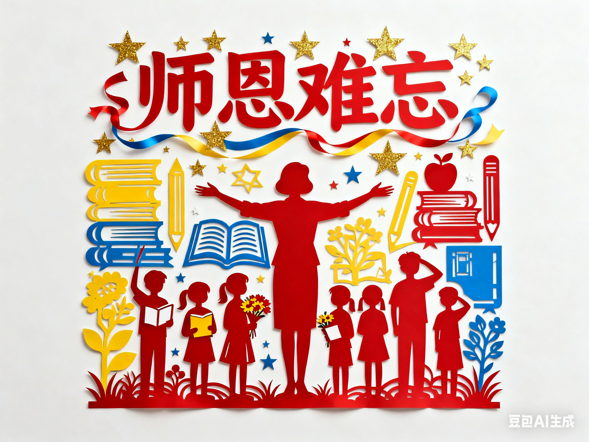

教师职业的详细介绍

教师是一项以 “人” 为核心、兼具专业性与公益性的特殊职业，其核心使命是
“教书育人”，既要传递知识，更要培育健全人格。从职责维度看，
教师需根据教育目标与学生身心发展规律，设计并实施教学计划，传授学科知识
（如语文教师培养学生的语言表达与文学素养，数学教师引导学生掌握逻辑思维与解题能力），同时承担 “育人” 职责
——
通过日常互动、品德课程、榜样示范等，培养学生的道德观念、社会责任感、团队协作能力，帮助学生树立正确的世界观、
人生观与价值观。从专业素养要求来看，教师需具备扎实的学科专业知识（如掌握本学科的核心概念、知识体系与前沿动态）、
系统的教育教学理论（如教育学、心理学知识，懂得因材施教、分层教学），还需拥有良好的沟通能力（能与学生、家长、同事有效协作）、
情绪管理能力（应对教学压力与学生的多样化需求）及创新能力（适应教育改革，运用多媒体、人工智能等新型教学工具）。从职业价值而言，
教师的工作直接关系到个体的成长与未来
—— 一名优秀的教师可能影响学生的人生选择与发展方向，而无数教师的共同努力，则为社会培养各类人才，推动文化传承与社会进步，
是
“人类灵魂的工程师”；但同时，教师职业也面临诸多挑战，如需持续更新教育理念以适应时代变化、承担较重的教学与科研压力、
应对学生心理健康问题等，这要求教师既要坚守教育初心，也要不断提升自身综合能力，在奉献中实现职业价值。